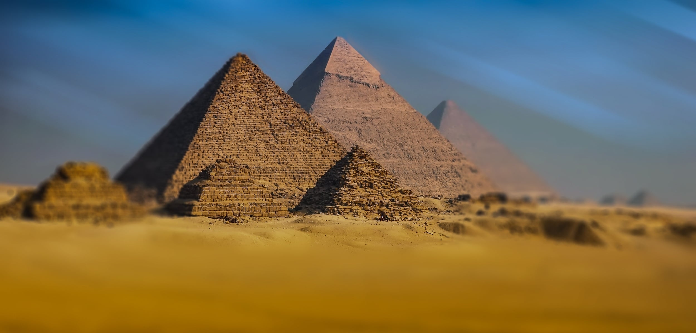
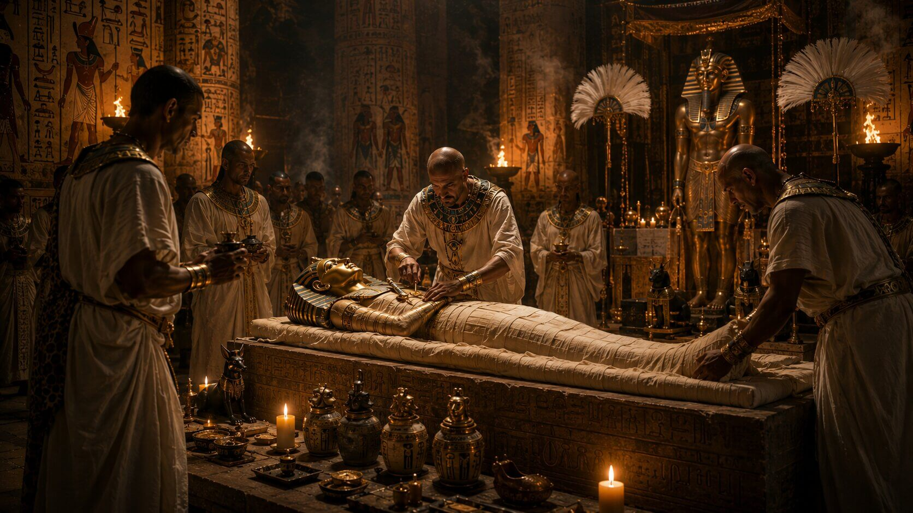
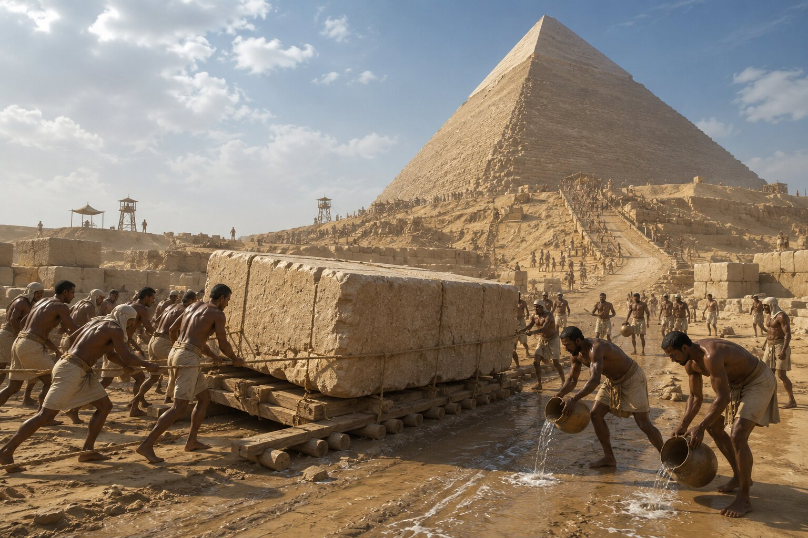
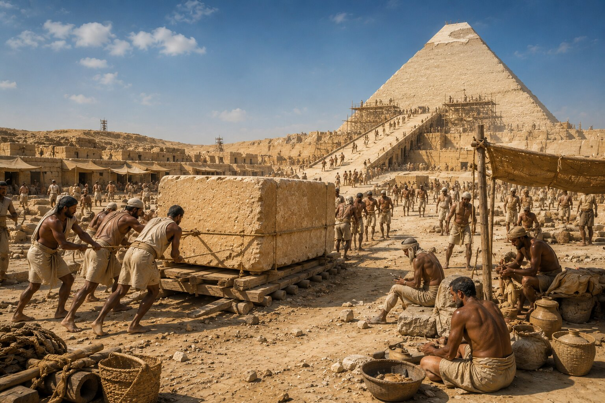
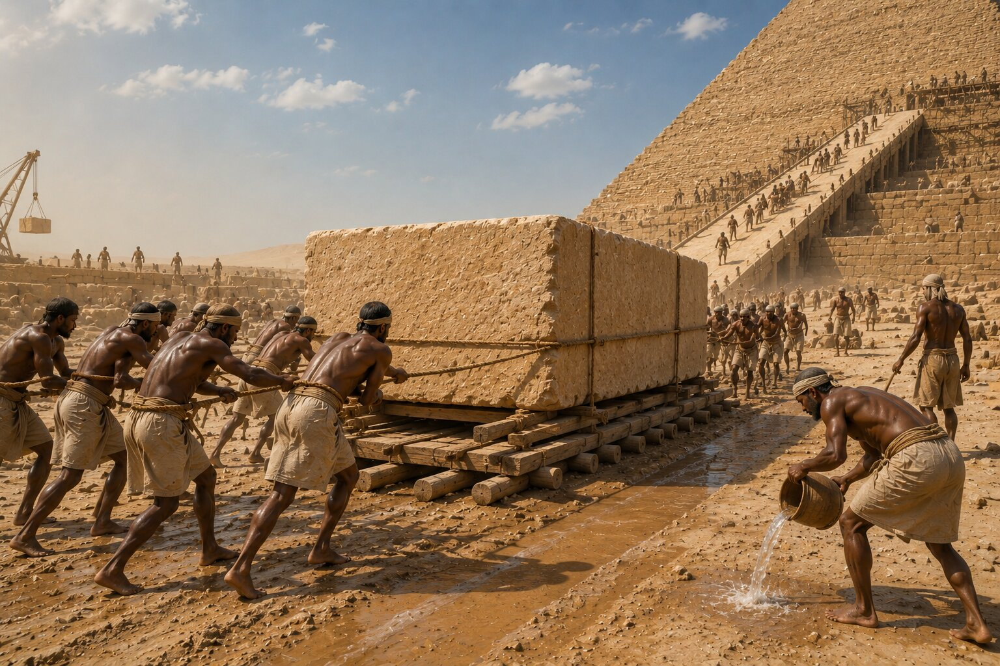
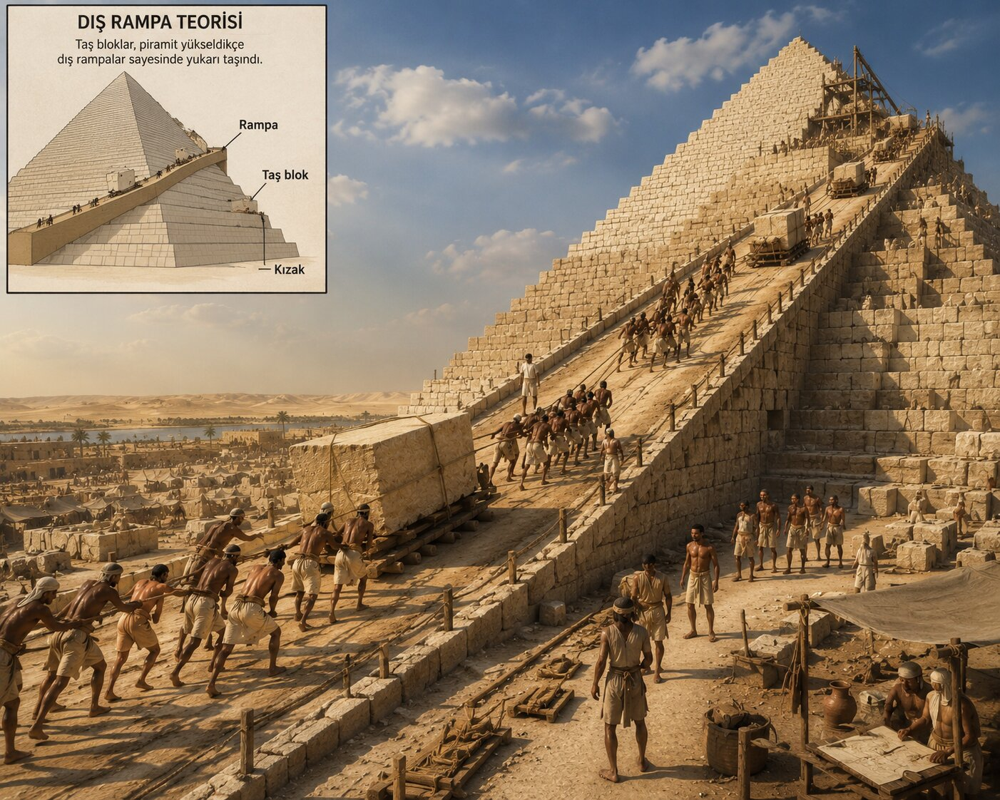
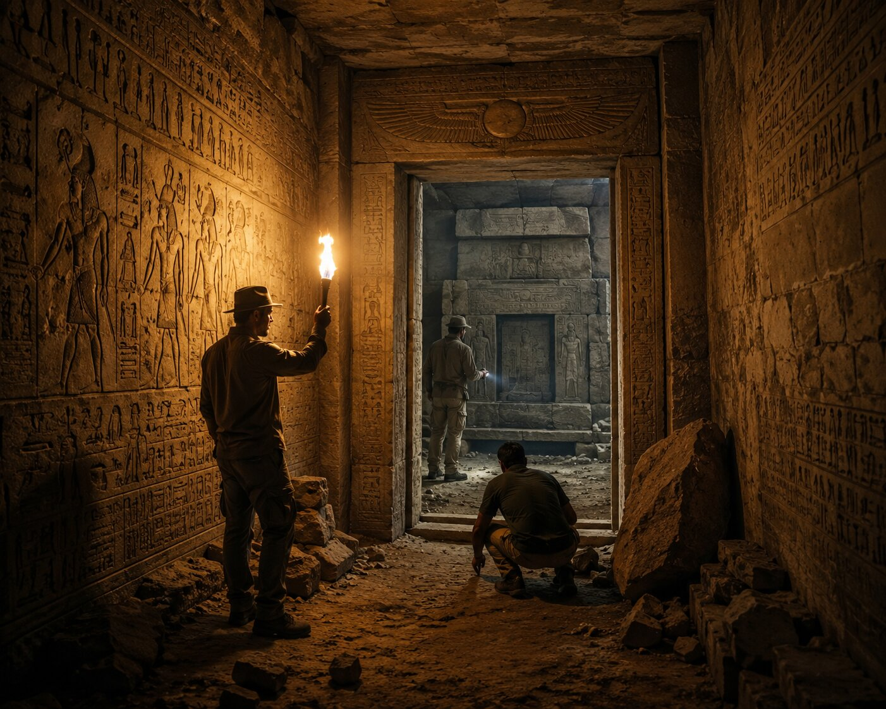

Bugün Giza Piramitleri'nin önünde duran insanların çoğu aynı şeyi hissediyor: ölçü duygusunun bozulduğunu.
Fotoğraflarda büyük görünen bu yapılar, gerçekte insanı rahatsız edecek kadar devasa. Çünkü mesele yalnızca yükseklik değil. Binlerce yıl önce yaşamış insanların, modern makineler olmadan bunu nasıl başardığı düşüncesi zihni zorlamaya başlıyor.
İşte tam bu yüzden piramitler yalnızca arkeolojik yapılar değil; insanlığın hâlâ tam olarak kabullenemediği bir mühendislik problemi gibi görülüyor.
Ve belki de en ilginç tarafı şu: Piramitler hakkında konuşurken insanlar çoğu zaman tarihten çok gizemleri hatırlıyor.
Uzaylı teorileri. Kayıp medeniyet iddiaları. Gizli odalar. Lanet hikâyeleri.
Çünkü birçok insan için dev taş blokların çölün ortasında bu kadar kusursuz şekilde üst üste yerleştirilmiş olması hâlâ "normal" görünmüyor.
Fakat gerçek hikâye, komplo teorilerinden çok daha etkileyici olabilir.
Piramitler Aslında Neden Yapıldı?
Antik Mısır'da ölüm bir son olarak görülmüyordu. İnsan öldüğünde ruhunun yaşamaya devam ettiğine inanılıyordu ve bu yüzden bedenin korunması büyük önem taşıyordu.
Mumyalama geleneğinin temelinde de bu düşünce vardı.
Firavunlar yalnızca siyasi lider değildi; aynı zamanda tanrılarla bağlantılı kutsal figürler olarak kabul ediliyordu. Bu yüzden onların mezarları sıradan olamazdı. Piramitler biraz da bu düşüncenin taşa dönüşmüş hâliydi.
Yani bir piramit yalnızca mezar değildi. Gücün, inancın ve ölümsüzlük arzusunun birleşimiydi.
Bugün bile piramitlerin insanı etkilemesinin sebeplerinden biri bu olabilir. Çünkü bu yapılar yalnızca mühendislik başarısı değil; ölüm korkusuna karşı verilmiş devasa bir meydan okuma gibi duruyor.

En Büyük Piramit: Keops Piramidi

Giza'daki Büyük Piramit, yani Keops Piramidi, yaklaşık 4500 yıl önce inşa edildi.
Bu tarihi düşündüğünde olay daha da garipleşiyor. Çünkü Keops Piramidi inşa edildiğinde:
- Roma İmparatorluğu yoktu,
- Antik Yunan'ın klasik dönemi başlamamıştı,
- hatta birçok ünlü medeniyet henüz ortaya çıkmamıştı.
Buna rağmen ortaya çıkan yapı, binlerce yıl boyunca dünyanın en yüksek insan yapımı yapısı olarak kaldı.
Araştırmacılara göre piramitte yaklaşık 2,3 milyon taş blok kullanıldı. Bazı bloklar birkaç ton ağırlığındaydı ve yapının toplam ağırlığı milyonlarca tonu buluyordu.
Fakat insanları en çok şaşırtan şey yalnızca büyüklük değil. Ölçümlerdeki hassasiyet.
Piramit, kuzey-güney eksenine inanılmaz bir doğrulukla hizalanmıştı. Taşların birleşim noktaları bazı yerlerde milimetrelik hatalarla yerleştirilmişti.
Modern insanlar için sorun tam burada başlıyor. Çünkü zihnimiz otomatik olarak şu soruyu soruyor:
"Bunu gerçekten antik insanlar mı yaptı?"
Uzaylı Teorileri Neden Bu Kadar Yaygınlaştı?
Çünkü insanlar geçmiş toplumların becerilerini çoğu zaman küçümsüyor.
Bugün teknolojiyle çevrili yaşadığımız için eski toplumları ilkel sanmaya eğilimliyiz. Fakat Antik Mısır düşündüğümüzden çok daha organize ve gelişmiş bir devletti.
Matematik biliyorlardı. Astronomi gözlemleri yapıyorlardı. Nil Nehri'nin döngüsünü takip ediyorlardı. Büyük iş gücünü yönetebiliyorlardı.
Yani ortada "imkânsız" bir yapıdan çok, insanlık tarihinin en büyük organizasyon projelerinden biri olabilir.
Buna rağmen uzaylı teorilerinin popüler kalmasının başka bir sebebi daha var: Piramitler gerçekten ilk bakışta mantığa aykırı görünüyor.
Çünkü birkaç tonluk taş blokların kilometrelerce taşınıp yüzlerce sıra üst üste dizildiğini düşünmek bile yorucu.
Fakat modern arkeoloji son yıllarda bu konuda önemli ipuçları buldu.
Piramitleri Gerçekten Köleler Mi İnşa Etti?

Hollywood yıllarca aynı sahneyi gösterdi: sıcakta kırbaçlanan binlerce köle ve dev taşları sürükleyen insanlar.
Ancak bugün birçok araştırmacı bu görüntünün gerçeği tam yansıtmadığını düşünüyor.
Piramitlerin yakınında bulunan işçi yerleşimleri, burada çalışan insanların organize ekipler hâlinde yaşadığını gösteriyor. Hatta bazı işçilerin:
- iyi beslendiği,
- sağlık hizmeti aldığı,
- düzenli çalışma sistemine sahip olduğu anlaşıldı.
Bu da "tamamen köle emeği" fikrini zayıflatıyor.
Araştırmacıların önemli bir kısmı, piramit inşasında dönemsel iş gücü kullanıldığını düşünüyor. Nil taşkınları sırasında tarım yapılamadığı için binlerce insan devlet projelerinde çalışıyor olabilir.
Bu detay aslında çok önemli. Çünkü piramitler yalnızca taş bloklardan oluşmuyor; aynı zamanda devasa bir devlet organizasyonunu temsil ediyor.
Taş Bloklar Nasıl Taşındı?

Asıl gizem burada başlıyor.
Çünkü tonlarca ağırlığa sahip blokların nasıl hareket ettirildiği yüzyıllardır tartışılıyor.
Uzun süre boyunca bunun neredeyse imkânsız olduğu düşünüldü. Fakat bilim insanları bazı deneyler yaptığında ilginç sonuçlar ortaya çıktı.
Kuru kum üzerinde ağır yük taşımak inanılmaz zor. Ancak kum hafifçe ıslatıldığında sürtünme ciddi şekilde azalıyor.
Daha da ilginci, Antik Mısır resimlerinde insanların kızakların önüne su döktüğü sahneler bulunuyor.
Yani Antik Mısırlılar muhtemelen fizik kurallarını düşündüğümüzden çok daha iyi kullanıyordu.
Bu küçük detay bile insanların piramitlere bakışını değiştirdi. Çünkü uzun süre "gizemli teknoloji" sanılan bazı şeylerin aslında mühendislik zekâsı olduğu anlaşılmaya başlandı.
Rampalar Gerçekten Kullanıldı Mı?

En güçlü teorilerden biri rampalar.
Araştırmacılara göre taş bloklar:
- düz rampalar,
- spiral rampalar,
- iç geçit sistemleri
yardımıyla yukarı taşınmış olabilir.
Fakat burada başka bir problem ortaya çıkıyor.
Piramit yükseldikçe rampaların da büyümesi gerekiyordu. Bu da bazı teorileri pratik olmaktan çıkarıyor.
İşte bu yüzden piramitlerin inşası konusunda hâlâ kesin cevap yok.
Belki de en gerçekçi açıklama şu: Antik Mısırlılar tek bir yöntem kullanmadı. Farklı teknikleri birleştirerek çalıştılar.
Ve dürüst olmak gerekirse, gizemin tamamen çözülememiş olması piramitleri daha etkileyici hâle getiriyor.
Piramitlerin İçinde Gerçekten Gizli Odalar Var Mı?

Bu soru yıllardır insanların hayal gücünü besliyor.
Özellikle modern popüler kültür, piramitleri sürekli gizemli yapılar gibi gösterdi: lanetler, saklı tüneller, kayıp bilgiler, gizli hazineler…
Bunların büyük kısmı abartılı olsa da, piramitlerin içinde gerçekten keşfedilmemiş alanlar bulundu.
2017 yılında araştırmacılar kozmik ışın teknolojisi kullanarak Büyük Piramit'in içinde daha önce bilinmeyen büyük bir boşluk keşfetti.
Bu alanın tam olarak ne olduğu hâlâ bilinmiyor.
Bir geçit mi? İnşaat sırasında bırakılmış boşluk mu? Yoksa henüz açılmamış bir oda mı?
Kesin cevap yok.
Ve belki de piramitleri bu kadar büyüleyici yapan şey tam olarak bu. Binlerce yıldır incelenen bir yapının içinde hâlâ bilinmeyen alanlar bulunabiliyor.
Piramitler İlk Yapıldığında Bugünkü Gibi Görünmüyordu
Bugün insanlar piramitleri kaba taş yapılar olarak düşünüyor. Oysa ilk inşa edildiklerinde durum tamamen farklıydı.
Piramitlerin dış yüzeyi parlak beyaz kalker taşlarla kaplıydı. Güneş ışığında adeta ışıldadıkları düşünülüyor.
Bazı tarihçiler, bu yapıların kilometrelerce uzaktan görülebildiğini söylüyor.
Yani bugün gördüğümüz aşınmış görüntü aslında zamanın etkisi. Orijinal hâlleri muhtemelen çok daha etkileyiciydi.
Mısır'da Aslında Çok Daha Fazla Piramit Var
Çoğu insan yalnızca Giza'daki üç büyük piramidi biliyor. Ancak Mısır'da yüzden fazla piramit keşfedildi.
Üstelik piramit mimarisi bir anda ortaya çıkmadı.
İlk mezarlar daha basit yapılardı. Zamanla:
- mastabalar,
- basamaklı piramitler,
- gerçek geometrik piramitler
ortaya çıktı.
Bu detay önemli çünkü bize şunu gösteriyor: Piramitler bir anda gökten düşmüş yapılar değildi. Yüzyıllar süren mimari deneylerin sonucuydu.
İnsanları Hâlâ Neden Bu Kadar Etkiliyorlar?
Çünkü piramitler yalnızca tarihî yapı değil.
Onlar aynı zamanda insan emeğinin, organizasyon gücünün, ölüm korkusunun, iktidarın ve inancın taşa dönüşmüş hâli gibi.
Ve belki de en etkileyici tarafı şu: Bu yapıları inşa eden insanların çoğunun adını bugün bilmiyoruz.
Fakat yaptıkları şey, binlerce yıl sonra bile milyonlarca insanı aynı soruyu sormaya zorluyor:
"Bunu gerçekten nasıl başardılar?"
Sık Sorulan Sorular
Mısır piramitleri kaç yaşında?
Giza'daki büyük piramitler yaklaşık 4500 yıllıktır.
Piramitleri gerçekten köleler mi yaptı?
Modern araştırmalar, piramit işçilerinin tamamen kölelerden oluşmadığını gösteriyor. Birçok işçinin organize ekipler hâlinde çalışan emekçiler olduğu düşünülüyor.
Piramitlerin içinde hâlâ keşfedilmemiş odalar var mı?
Evet. Özellikle Büyük Piramit içinde keşfedilen bazı boşlukların amacı hâlâ tam olarak bilinmiyor.
Piramitleri uzaylıların yaptığı doğru mu?
Bu iddiayı destekleyen bilimsel bir kanıt bulunmuyor. Arkeolojik veriler, piramitlerin Antik Mısırlılar tarafından inşa edildiğini gösteriyor.
Mısır'da kaç piramit var?
Bugüne kadar Mısır'da 100'den fazla piramit keşfedildi.